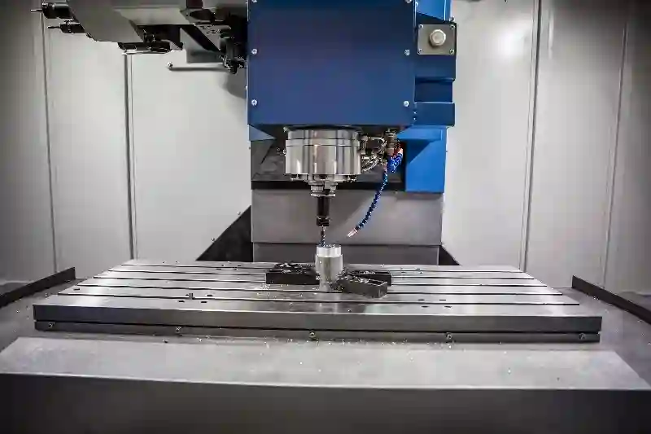
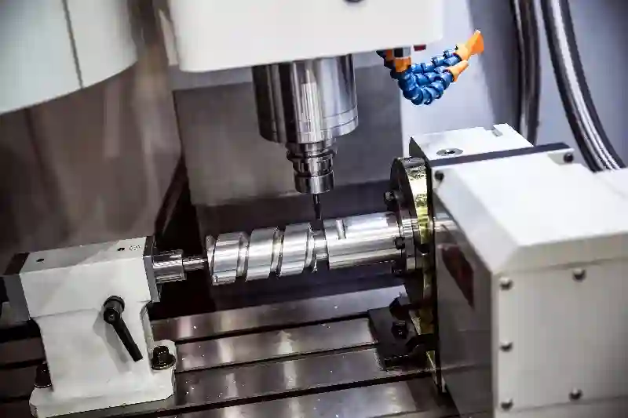
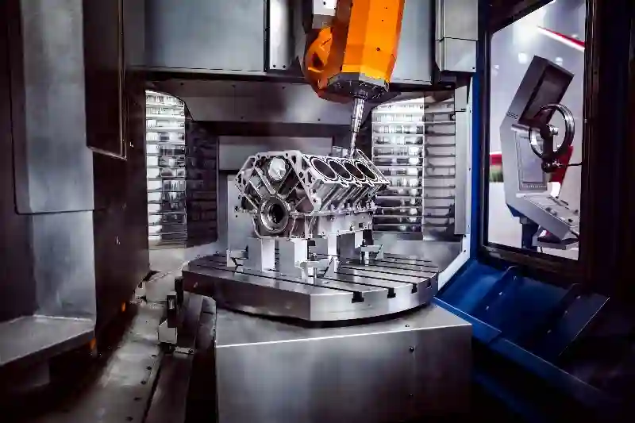
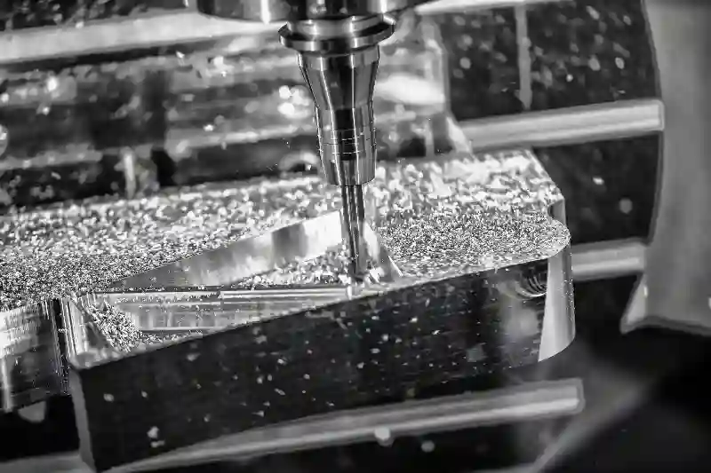

CNC Frezeleme ve Dik İşleme Hizmetleri
Endüstriyel üretimde karmaşık geometrilere sahip parçaların yüksek doğrulukla işlenmesi, üretim kalitesinin temel belirleyicilerinden biridir. CNC frezeleme ve dik işleme, bu ihtiyaca yanıt veren en kritik talaşlı imalat yöntemleri arasında yer alır. Aymaksan Makina, mühendislik altyapısı ve entegre üretim yaklaşımıyla, farklı sektörlerin gereksinimlerine uygun hassas CNC frezeleme çözümleri sunar.
Modern üretim süreçlerinde yalnızca ölçü hassasiyeti değil; yüzey kalitesi, tekrarlanabilirlik ve proses güvenilirliği de ön plana çıkmaktadır. Bu noktada dik işleme merkezi ile parça üretimi, hem prototip hem de seri imalat projelerinde sürdürülebilir kalite sağlar. Aymaksan bünyesinde yürütülen CNC frezeleme süreçleri, tasarımdan nihai kontrole kadar planlı ve izlenebilir bir yapı içerisinde ilerler. Üretim altyapımız; özel talaşlı imalat, CNC tornalama, kaynak ve montaj hizmetleri, kalite kontrol ve prototip üretim & Ar-Ge desteği ile entegre şekilde çalışır. Böylece her proje, yalnızca bir parça üretimi değil, uçtan uca bir mühendislik çözümü olarak ele alınır.
CNC Frezeleme Nedir? Endüstriyel Üretimdeki Yeri
CNC frezeleme hizmetleri, bilgisayar kontrollü sistemler aracılığıyla çok eksenli kesici takımların kullanıldığı, yüksek hassasiyetli bir talaş kaldırma yöntemidir. Bu yöntem; prizmatik, karmaşık yüzeylere sahip veya dar tolerans gerektiren parçaların üretiminde tercih edilir. Özellikle kalıp, makine, otomotiv ve savunma sanayi uygulamalarında CNC frezeleme, üretimin omurgasını oluşturur.
CNC frezeleme sürecinin en büyük avantajı, tasarlanan geometrinin üretim esnasında birebir ve tekrarlanabilir şekilde elde edilebilmesidir. Bu sayede ölçü sapmaları minimize edilirken, seri üretimde kalite standardı korunur. Aymaksan Makina’da uygulanan endüstriyel CNC dik işleme süreçleri, CAD/CAM destekli programlama ve proses optimizasyonu ile desteklenir.
Üretim planlaması yapılırken parça geometrisi, malzeme yapısı ve kullanım alanı birlikte değerlendirilir. Böylece her parça için en uygun kesme parametreleri belirlenir ve proses verimliliği artırılır. Bu yaklaşım, yalnızca üretim kalitesini değil, teslim sürelerinin kontrolünü de sağlar. CNC frezeleme süreçlerinde ölçü toleranslarının doğru yönetilmesi, uluslararası standartlara uygunluk açısından kritik öneme sahiptir. Bu konuda ISO genel tolerans standartları, üretimde referans alınan temel dokümanlar arasında yer alır.




Dik İşleme Merkezlerinin CNC Frezelemedeki Rolü
Dik işleme merkezi ile parça üretimi, özellikle çok yüzeyli ve yüksek tolerans gerektiren iş parçalarında önemli avantajlar sunar. Dikey eksende çalışan bu makineler, parçanın bağlama stabilitesini artırarak daha hassas sonuçlar elde edilmesini mümkün kılar. Bu yapı, karmaşık geometrilerin tek bağlamada işlenmesine olanak tanır.
Aymaksan Makina’nın dik işleme altyapısı, farklı boyut ve tolerans gereksinimlerine sahip parçalar için esnek üretim kabiliyeti sağlar. Özel talaşlı imalat frezeleme projelerinde kullanılan bu merkezler, yüzey kalitesi ve ölçü doğruluğunu aynı anda kontrol altında tutar. Bu sayede ikincil işlem ihtiyacı azalır ve üretim süresi optimize edilir.
Dik işleme merkezlerinde gerçekleştirilen operasyonlar; cep boşaltma, kanal açma, delik delme, diş çekme ve yüzey frezeleme gibi çok sayıda işlemi kapsar. Bu çok yönlülük, farklı sektörlerden gelen projelerin tek bir üretim hattında yönetilmesine olanak tanır.
Projeni Başlat
CNC Frezeleme Süreçleri Nasıl Planlanır?
Endüstriyel üretimde başarılı sonuçlar elde edebilmek için CNC frezeleme ve dik işleme süreçlerinin doğru planlanması kritik öneme sahiptir. Bu planlama yalnızca makine ayarlarını değil; parça geometrisini, malzeme yapısını, tolerans gereksinimlerini ve üretim adımlarını kapsayan bütüncül bir yaklaşımla ele alınmalıdır. Aymaksan Makina’da her proje, üretim öncesinde detaylı bir teknik analizden geçirilir ve süreç buna göre yapılandırılır.
Planlama aşamasının temelini CAD/CAM destekli dijital modelleme oluşturur. Teknik çizimler, üretim öncesinde analiz edilerek takım yolları, bağlama stratejileri ve işlem sıralamaları belirlenir. Bu sayede CNC frezeleme hizmetleri, yalnızca ölçü doğruluğu değil; yüzey kalitesi ve işlem sürekliliği açısından da optimize edilir. Doğru planlama, seri üretimde tekrarlanabilir kalite elde edilmesini sağlar.
Üretim sürecinin başında yapılan bu mühendislik çalışmaları, olası revizyonların önüne geçer ve maliyet kontrolünü destekler. Aynı zamanda teslim sürelerinin öngörülebilir olmasını sağlayarak proje yönetiminde güvenilirlik oluşturur.
Dik İşleme Merkezlerinde Operasyon Yönetimi
Dik işleme merkezi ile parça üretimi, çok adımlı operasyonların tek bir sistem üzerinden yönetilmesine imkân tanır. Bu merkezler, farklı kesme ve işleme operasyonlarının ardışık şekilde uygulanmasına olanak sağladığı için hem zaman hem de kalite avantajı sunar. Aymaksan Makina’da kullanılan dik işleme altyapısı, farklı parça tiplerine uyarlanabilir esnek bir üretim yapısı sunar.
Operasyon yönetiminde temel hedef, parçanın minimum bağlama ile maksimum doğrulukta işlenmesidir. Bu yaklaşım, ölçüsel sapmaların azaltılmasına katkı sağlar. Endüstriyel CNC dik işleme süreçlerinde kullanılan takım setleri ve kesme parametreleri, her parça için özel olarak belirlenir. Böylece takım aşınmaları kontrol altına alınırken yüzey kalitesi korunur.
Ayrıca operasyon sıralaması, parça üzerindeki gerilmeleri minimize edecek şekilde planlanır. Bu durum, özellikle hassas tolerans gerektiren teknik parçalarda üretim başarısını doğrudan etkiler. Bu disiplinli yaklaşım, Aymaksan’ın kalite standartlarının temelini oluşturur.
Malzeme Bazlı CNC Frezeleme Yaklaşımları
Her malzeme, CNC frezeleme sürecinde farklı teknik gereksinimler doğurur. Bu nedenle hassas CNC frezeleme çözümleri, malzeme özelliklerine göre şekillendirilmelidir. Aymaksan Makina’da alüminyum, karbon çelik, paslanmaz çelik, döküm ve mühendislik plastikleri gibi farklı malzemeler için ayrı üretim stratejileri uygulanır.
Alüminyum gibi hafif ve işlenebilir malzemelerde yüksek devirli kesme stratejileri tercih edilirken, çelik ve paslanmaz çelik gibi sert malzemelerde kontrollü ilerleme ve takım dayanımı ön plana çıkar. Özel talaşlı imalat frezeleme projelerinde bu farklılıklar dikkate alınarak takım seçimi ve kesme parametreleri optimize edilir.
Malzeme bazlı yaklaşım, yalnızca üretim kalitesini değil; takım ömrünü ve enerji verimliliğini de doğrudan etkiler. Bu sayede hem teknik hem de ekonomik açıdan sürdürülebilir bir üretim süreci elde edilir.
Tolerans Yönetimi ve Hassasiyet Kontrolü
CNC frezeleme süreçlerinde tolerans yönetimi, üretim kalitesinin belirleyici unsurlarından biridir. Özellikle fonksiyonel parçalarda mikron seviyesindeki sapmalar dahi ürün performansını etkileyebilir. Bu nedenle CNC frezeleme ve dik işleme uygulamalarında ölçüsel doğruluk, üretim sürecinin her aşamasında kontrol altında tutulur.
Aymaksan Makina’da tolerans yönetimi, proses içi kontroller ve son ölçüm uygulamalarıyla desteklenir. Parçalar, üretim tamamlandıktan sonra kalite kontrol & ölçüm hizmetleri kapsamında detaylı olarak incelenir. Bu yaklaşım, üretim sürecinde oluşabilecek sapmaların erken aşamada tespit edilmesini sağlar.
Bu disiplinli kontrol yapısı, seri üretimde parça uyumluluğunu garanti altına alır. Aynı zamanda müşteri taleplerine uygun, izlenebilir ve raporlanabilir bir üretim süreci sunar. CNC frezeleme süreçlerinde toleransların doğru yönetilmesi için Makina Mühendisleri Odası teknik yayınları, mühendislik uygulamalarında önemli bir referans kaynağı olarak kullanılmaktadır.
CNC Frezeleme ile Diğer Hizmetlerin Entegrasyonu
Aymaksan Makina’da CNC frezeleme hizmetleri, tek başına sunulan bir üretim faaliyeti olarak ele alınmaz. Bu hizmet; CNC tornalama, kaynak ve montaj hizmetleri, kalite kontrol & ölçüm hizmetleri ve prototip üretim & Ar-Ge desteği ile entegre şekilde yürütülür. Bu yapı, projelerin tek merkezden yönetilmesini sağlar.
Örneğin, frezeleme ile üretilen bir parça, devamında tornalama veya montaj süreçlerine sorunsuz şekilde aktarılabilir. Bu entegrasyon, üretim sürelerini kısaltırken kalite sürekliliğini de destekler. CNC frezeleme Ankara merkezli projelerde bu bütüncül yaklaşım, müşterilere operasyonel avantaj sağlar.
Entegre hizmet yapısı, özellikle karmaşık projelerde koordinasyon ihtiyacını azaltır ve üretim sürecinin her aşamasında kontrolü güçlendirir.
Projeni Başlat
Sektörel Uygulamalarda CNC Frezeleme ve Dik İşleme
Farklı sektörlerin üretim ihtiyaçları, CNC frezeleme süreçlerinde değişken teknik gereksinimler doğurur. Bu nedenle CNC frezeleme ve dik işleme, standart bir üretim yöntemi değil; sektöre özel çözümlerle yapılandırılması gereken bir mühendislik disiplinidir. Aymaksan Makina, çok sayıda endüstriyel alanda edindiği tecrübeyle bu farklılıkları üretim süreçlerine doğru şekilde entegre eder.
Makine ve endüstri ekipmanları üretiminde yüksek dayanım gerektiren parçalar ön plandayken, otomotiv ve savunma sanayinde hassasiyet ve tekrarlanabilirlik kritik rol oynar. Bu projelerde hassas CNC frezeleme çözümleri, parça fonksiyonelliğini ve montaj uyumunu doğrudan etkiler. Aymaksan’ın üretim yaklaşımı, her sektöre özgü tolerans ve kalite beklentilerini karşılayacak şekilde planlanır.
Ayrıca medikal, enerji ve özel makine imalatı gibi alanlarda, parça güvenliği ve izlenebilirlik öncelikli kriterler arasında yer alır. Bu alanlarda yürütülen endüstriyel CNC dik işleme projeleri, kalite kontrol süreçleriyle entegre biçimde yönetilir. Endüstriyel üretim süreçlerinde sektörel standartların takibi için Sanayi ve Teknoloji Bakanlığı sektörel yayınları, güncel ve güvenilir bir referans kaynağıdır.
Prototip Üretimden Seri İmalata Geçiş Süreci
Üretim projelerinde prototip aşaması, nihai ürün kalitesinin belirlenmesinde kritik bir rol oynar. CNC frezeleme hizmetleri, prototip üretim sürecinde tasarım doğrulaması ve fonksiyonel testlerin yapılmasına olanak tanır. Aymaksan Makina, prototip üretim & Ar-Ge desteği kapsamında bu süreci mühendislik perspektifiyle ele alır.
Prototip aşamasında elde edilen veriler, seri üretime geçişte referans alınır. Takım yolları, kesme parametreleri ve bağlama yöntemleri bu aşamada optimize edilir. Bu yaklaşım, seri üretimde zaman kayıplarını ve maliyet artışlarını önler. Dik işleme merkezi ile parça üretimi, bu geçiş sürecinde stabil ve tekrarlanabilir sonuçlar sunar.
Seri üretime geçildiğinde ise üretim planlaması, kapasite yönetimi ve kalite kontrol süreçleri eş zamanlı olarak yürütülür. Bu yapı, Aymaksan’ın uzun vadeli iş ortaklıkları kurmasında önemli bir avantaj sağlar.
Ar-Ge Destekli CNC Frezeleme Yaklaşımı
Ar-Ge çalışmaları, üretim süreçlerinin sürekli gelişimini sağlar. Özel talaşlı imalat frezeleme projelerinde Ar-Ge desteği, yalnızca yeni ürün geliştirme değil; mevcut üretim yöntemlerinin iyileştirilmesi anlamına da gelir. Aymaksan Makina, CNC frezeleme süreçlerinde edindiği saha verilerini Ar-Ge çalışmalarıyla birleştirir.
Bu çalışmalar kapsamında; takım performansları, malzeme davranışları ve proses süreleri analiz edilir. Elde edilen veriler, üretim parametrelerinin güncellenmesine katkı sağlar. Böylece CNC frezeleme ve dik işleme süreçleri, zaman içerisinde daha verimli ve öngörülebilir hale gelir.
Ar-Ge destekli yaklaşım, müşterilere yalnızca mevcut çözümleri sunmakla kalmaz; aynı zamanda gelecekteki üretim ihtiyaçlarına yönelik alternatifler geliştirilmesine de imkân tanır. Bu durum, özellikle yüksek katma değerli projelerde stratejik bir avantaj oluşturur.
Kalite Kontrol Süreçleri ile Entegre Üretim
Kalite kontrol, CNC frezeleme süreçlerinin ayrılmaz bir parçasıdır. Üretilen parçaların teknik çizimlere uygunluğu, ölçüm ve test süreçleriyle doğrulanır. Aymaksan Makina’da CNC frezeleme hizmetleri, kalite kontrol & ölçüm hizmetleri ile entegre şekilde yürütülür.
Proses içi kontroller, üretim sırasında oluşabilecek sapmaların erken aşamada tespit edilmesini sağlar. Son kontrol aşamasında ise parçalar, belirlenen tolerans aralıklarına göre detaylı olarak ölçülür. Bu disiplinli yapı, seri üretimde kalite sürekliliğini garanti altına alır.
Kalite kontrol verileri, üretim süreçlerinin izlenebilirliğini artırır ve gerektiğinde proses iyileştirmelerine temel oluşturur. Bu yaklaşım, Aymaksan’ın güvenilir üretim anlayışını destekleyen temel unsurlardan biridir.
CNC Frezeleme Hizmetlerinde Süreç Güvenilirliği
Üretim süreçlerinde güvenilirlik, teslim süreleri ve ürün kalitesi açısından kritik öneme sahiptir. CNC frezeleme Ankara merkezli projelerde Aymaksan Makina, planlama ve üretim adımlarını şeffaf bir şekilde yönetir. Bu sayede müşteriler, sürecin her aşamasında bilgi sahibi olur.
Süreç güvenilirliği; doğru planlama, deneyimli operatörler ve kontrol mekanizmalarının birlikte çalışmasıyla sağlanır. Hassas CNC frezeleme çözümleri, bu yapının teknik temelini oluşturur. Aymaksan’ın üretim altyapısı, uzun vadeli projelerde sürdürülebilir kalite sunmayı hedefler.
Bu güvenilir yapı, müşteri memnuniyetinin yanı sıra sektörel referansların oluşmasına da katkı sağlar.
Projeni Başlat
CNC Frezeleme ve Dik İşlemede Teknik Altyapı Yetkinliği
Endüstriyel üretimde sürdürülebilir kalite, güçlü bir teknik altyapı ile mümkün olur. CNC frezeleme ve dik işleme süreçlerinde kullanılan makine parkı, üretim hassasiyetini ve kapasite yönetimini doğrudan etkiler. Aymaksan Makina, farklı ölçü ve tolerans gereksinimlerine cevap verebilen dik işleme merkezleriyle geniş bir üretim esnekliği sunar.
Teknik altyapı yalnızca makine gücüyle sınırlı değildir. CAD/CAM yazılımları, takım yönetim sistemleri ve proses izleme araçları, CNC frezeleme hizmetlerinin temel bileşenleri arasında yer alır. Bu dijital destek, üretim sürecinin planlı ve izlenebilir şekilde ilerlemesini sağlar. Böylece karmaşık parçalar dahi yüksek doğrulukla işlenebilir.
Aymaksan’ın altyapı yaklaşımı, kısa süreli projelerin yanı sıra uzun vadeli seri üretim taleplerinde de istikrarlı sonuçlar elde edilmesini hedefler. Bu yapı, müşteri beklentilerinin ötesinde bir üretim standardı oluşturur. Endüstriyel üretimde makine ve proses altyapısının önemi, TÜBİTAK sanayi odaklı yayınları içerisinde detaylı olarak ele alınmaktadır.
Makine Parkı ile Uyumlu Üretim Kapasitesi Yönetimi
Dik işleme merkezi ile parça üretimi, kapasite yönetiminin doğru yapılmasını gerektirir. Aymaksan Makina’da üretim planlaması; makine uygunluğu, işlem süreleri ve parça önceliklerine göre organize edilir. Bu sayede aynı anda birden fazla proje, kalite ve termin hedeflerinden ödün verilmeden yönetilebilir.
Kapasite yönetimi sürecinde her makine, belirli operasyonlara göre optimize edilir. Bu yaklaşım, endüstriyel CNC dik işleme projelerinde darboğazların önüne geçer. Aynı zamanda teslim sürelerinin öngörülebilir olmasını sağlar. Aymaksan’ın planlama disiplini, yoğun üretim dönemlerinde dahi operasyonel kontrolü korumayı mümkün kılar.
Bu yapı, özellikle seri üretim taleplerinde müşterilere süreklilik ve güven sağlar. Üretim kapasitesinin doğru yönetilmesi, maliyet kontrolü açısından da önemli bir avantaj oluşturur.
CNC Frezeleme Süreçlerinde Operatör ve Proses Deneyimi
Teknik altyapı kadar insan kaynağı da üretim başarısının belirleyici unsurlarındandır. Hassas CNC frezeleme çözümleri, deneyimli operatörler ve proses bilgisiyle anlam kazanır. Aymaksan Makina’da üretim süreçleri, teknik bilgiye sahip ekipler tarafından yönetilir.
Operatör deneyimi; takım seçimi, kesme parametrelerinin ayarlanması ve olası proses risklerinin öngörülmesi gibi kritik noktalarda fark yaratır. Bu deneyim, özel talaşlı imalat frezeleme projelerinde kalite sürekliliğinin sağlanmasına katkı sağlar. Ayrıca üretim sırasında oluşabilecek sorunlara hızlı müdahale edilmesini mümkün kılar.
Proses deneyimi, zaman içerisinde elde edilen üretim verilerinin analiz edilmesiyle desteklenir. Bu sayede CNC frezeleme süreçleri sürekli olarak iyileştirilir ve standartlar yükseltilir.
CNC Frezeleme ile CNC Tornalama Arasındaki Operasyonel Uyum
Aymaksan Makine’de CNC frezeleme hizmetleri, CNC tornalama süreçleriyle entegre bir yapı içerisinde yürütülür. Bu entegrasyon, çok operasyonlu parçaların tek merkezden üretilmesine olanak tanır. Frezeleme ile başlayan bir üretim süreci, tornalama operasyonlarıyla tamamlanabilir.
Bu operasyonel uyum, parça geometrisinin korunmasını ve ölçüsel tutarlılığı destekler. CNC frezeleme ve dik işleme süreçlerinin tornalama ile birlikte planlanması, üretim sürelerini kısaltırken kalite risklerini azaltır. Bu yaklaşım, özellikle karmaşık montaj gerektiren parçalarda önemli avantaj sağlar.
Entegre üretim yapısı, Aymaksan’ın hizmetlerimiz başlığı altında sunduğu çözümlerin birbirini tamamlamasını sağlar.
Kaynak ve Montaj Süreçleri ile Tamamlanan CNC Frezeleme
Frezeleme ve dik işleme ile üretilen parçalar, birçok projede kaynak ve montaj aşamalarıyla tamamlanır. Aymaksan Makine, CNC frezeleme Ankara merkezli projelerde bu süreçleri koordineli şekilde yönetir. Kaynak ve montaj hizmetleri, frezeleme sonrası parçaların fonksiyonel hale getirilmesini sağlar.
Bu entegrasyon, üretim sürecinde farklı tedarikçilere olan ihtiyacı azaltır. Aynı zamanda kalite kontrol süreçlerinin tek merkezden yürütülmesine imkân tanır. Hassas CNC frezeleme çözümleri, montaj uyumu yüksek parçalar üretilmesini destekler.
Sonuç olarak, frezeleme ile başlayan üretim süreci, montajla tamamlanan uçtan uca bir çözüm haline gelir.
Projeni Başlat
CNC Frezeleme ve Dik İşlemede Güven, Süreklilik ve Şeffaflık
Endüstriyel üretimde uzun vadeli iş birlikleri, yalnızca teknik kapasiteyle değil; güvenilirlik, şeffaflık ve süreklilik ilkeleriyle mümkündür. CNC frezeleme ve dik işleme süreçlerinde Aymaksan Makina, üretimin her aşamasını ölçülebilir ve izlenebilir bir yapı içerisinde yönetir. Bu yaklaşım, müşterilere yalnızca parça değil; sürdürülebilir bir üretim çözümü sunar.
Üretim planlamasından kalite kontrol aşamasına kadar tüm süreçler, teknik dokümantasyon ve raporlama ile desteklenir. Bu sayede projelerin ilerleyişi net şekilde takip edilebilir. CNC frezeleme hizmetleri, bu şeffaf yapı sayesinde hem prototip hem de seri üretim projelerinde güvenli bir zeminde yürütülür.
Aymaksan’ın üretim anlayışı, teslim edilen her parçanın arkasında durmayı ve uzun vadeli çözüm ortağı olmayı esas alır.
Ölçülebilir Kalite Standartları ile CNC Frezeleme
Kalite, CNC frezeleme süreçlerinde soyut bir kavram değil; ölçülebilir teknik kriterlerin bütünüdür. Hassas CNC frezeleme çözümleri, tolerans aralıklarının net şekilde tanımlanması ve bu aralıkların üretim boyunca korunmasıyla mümkündür. Aymaksan Makina’da kalite, süreç sonunda değil; sürecin tamamında kontrol edilen bir parametredir.
Üretim sırasında uygulanan proses içi kontroller, olası sapmaların erken aşamada tespit edilmesini sağlar. Son ölçüm aşamasında ise parçalar, kalite kontrol & ölçüm hizmetleri kapsamında detaylı olarak doğrulanır. Bu yapı, endüstriyel CNC dik işleme projelerinde tutarlılık ve tekrar edilebilirlik sağlar.
Ölçülebilir kalite yaklaşımı, özellikle seri üretim projelerinde parça uyumluluğunu ve montaj başarısını doğrudan etkiler. CNC işleme süreçlerinde kalite yönetimi ve üretim standartları konusunda Türk Standartları Enstitüsü (TSE) tarafından yayımlanan dokümanlar önemli bir referans oluşturmaktadır.
CNC Frezeleme Ankara Merkezli Üretim Avantajı
CNC frezeleme Ankara merkezli üretim altyapısı, lojistik ve iletişim açısından önemli avantajlar sunar. Aymaksan Makine, Ankara’daki konumuyla hem bölgesel hem de ulusal ölçekte projelere hızlı erişim sağlar. Bu durum, özellikle zaman hassasiyeti yüksek projelerde operasyonel esneklik oluşturur.
Yerel üretim avantajı, teknik görüşmelerin ve revizyon süreçlerinin daha hızlı ilerlemesine katkı sağlar. Dik işleme merkezi ile parça üretimi, bu yakın iletişim sayesinde müşteri beklentilerine daha doğru şekilde uyarlanır. Ayrıca üretim sürecinde ihtiyaç duyulan teknik destek, yerinde ve zamanında sunulabilir.
Bu konum avantajı, Aymaksan’ın Ankara merkezli sanayi projelerinde tercih edilmesinde önemli bir rol oynar.
CNC Frezeleme Hizmetlerinde Uzun Vadeli İş Ortaklığı Yaklaşımı
Aymaksan Makina için CNC frezeleme ve dik işleme, tek seferlik bir üretim faaliyeti değil; uzun vadeli iş ortaklığının temelini oluşturan bir süreçtir. Bu yaklaşım, müşterilerin değişen üretim ihtiyaçlarına zaman içinde uyum sağlamayı mümkün kılar.
Üretim süreçlerinde elde edilen tecrübe, yeni projelere aktarılır ve her iş, önceki projelerden öğrenilen bilgilerle daha verimli hale getirilir. Özel talaşlı imalat frezeleme projelerinde bu süreklilik, kalite standardının korunmasını sağlar.
Bu iş modeli, Aymaksan’ın sektörde güvenilir bir üretim ortağı olarak konumlanmasına katkı sağlar.